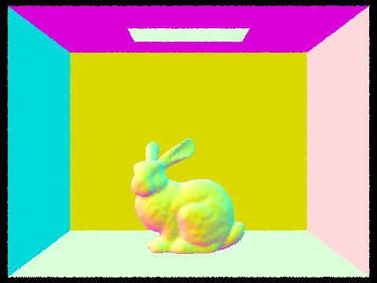

Project 3-1
Part 1: Ray Generation and Scene Intersection
Questions:
-
Walk through the ray generation and primitive intersection parts of the rendering
pipeline.
-
Explain the triangle intersection algorithm you implemented in your own words.
-
Show images with normal shading for a few small .dae files.
Answers:
-
Given normalized image coordinates (x, y) as inputs, the ray generation function
first transforms the image coordinates to camera space. Now that we have an
origin (where the camera is) and a direction (from the camera to the given point)
in the camera space, we can transform them to generate a ray in the world space.
In order to detect ray-triangle intersection, we use Möller Trumbore algorithm
covered in lecture, which not only tests ray-plane intersection but also tests
if the hit point is inside the triangle by outputting the t value and the
Barycentric coordinates of the hit point. If the t value is between min_t and
max_t of the ray and the Barycentric coordinates are between 0 and 1, we have a
successful intersection and update max_t and the intersection point.
In order to detect ray-sphere intersection, we use the ray equation and the
sphere equation to set up and solve a quadratic equation in terms of t. If t has
root(s) between min_t and max_t of the ray, we will take the smaller root and
update max_t and the intersection point.
-
We implement triangle intersection algorithm using Möller Trumbore algorithm,
which does two things: test ray-plane intersection and test if the hit point
is inside the triangle. In order to test ray-plane intersection, we use the
ray equation and the plane equation to set up and solve a linear equation. In
order to test if the hit point is inside the triangle, we repeat what we did in
project 1 by calculating the intersection point's Barycentric coordinates to see
whether they are between 0 and 1. This is essentially what Möller Trumbore
algorithm does, but it has a more optimized way (1 division, 27 multiplications,
17 additions) to calculate t and Barycentric coordinates as shown
here.
-
-

-
-
-

Part 2: Bounding Volume Hierarchy
Questions:
-
Walk through your BVH construction algorithm. Explain the heuristic you chose for
picking the splitting point.
-
Show images with normal shading for a few large .dae files that you can only render
with BVH acceleration.
-
Compare rendering times on a few scenes with moderately complex geometries with and
without BVH acceleration. Present your results in a one-paragraph analysis.
Answers:
-
Our BVH construction algorithm takes a recursive approach. It first iterates through
every primitive inside the current node and construct a bbox big enough to hold all
primitives. If the number of primitives inside the node is less than or equal to
max_leaf_size, we have reached the base case and can return the current node.
Otherwise, we need to split the primitives into two nodes. The heuristic we choose
for picking the splitting point is the average of centroids along the longest axis
of the bbox. This heuristic guarantees that there is at least one primitive on each
side of the splitting point if max_leaf_size >= 2 so we would not encounter segfault.
After the split, we recursively call the BVH construction algorithm on each portion
to construct the left and right children of the current node before returning.
-
-
Rendering cow.dae takes 28.5324s without BVH acceleration and 0.1014s with BVH
acceleration.
Rendering CBbunny.dae takes 68.4933s without BVH acceleration and 0.0816s with BVH
acceleration.
Rendering CBdragon.dae takes 275.0697s without BVH acceleration and 0.1188s with BVH
acceleration.
Therefore, we can see that BVH-accelerated intersection algorithm significantly
improves rendering time.
Part 3: Direct Illumination
Questions:
-
Walk through both implementations of the direct lighting function.
-
Show some images rendered with both implementations of the direct lighting function.
-
Focus on one particular scene with at least one area light and compare the noise
levels in soft shadows when rendering with 1, 4, 16, and 64 light rays (the -l flag)
and with 1 sample per pixel (the -s flag) using light sampling, not uniform
hemisphere sampling.
-
Compare the results between uniform hemisphere sampling and lighting sampling in a
one-paragraph analysis.
Answers:
-
For uniform hemisphere sampling, we estimate the direct lighting on a point by
sampling uniformly in a hemisphere. For each sample, we sample a random direction
in the hemisphere and construct a ray starting from hit_p pointing in the sampled
direction. This is the reversed incoming ray. We then use BVH to find where this
ray intersects with the scene. If the ray intersects an area light source, the
intersection's BSDF will have a positive emissive spectrum. Otherwise, the
intersection's BSDF will have a zero emissive spectrum. Having all the values we
need, now we can apply the reflection equation to calculate how much outgoing
light there is.
For importance sampling lights, we estimate the direct lighting on a point by
sampling directions between every light source in the scene and hit_p. For each
light source, we first check whether it is a point light source. If so, we only
need to sample once for this light source; otherwise, we need to sample
ns_area_light number of times. For each of the samples, we sample a direction
from hit_p towards the light source and construct a ray starting from hit_p in
that direction. This is the reversed incoming ray. If this ray does not intersect
anything before reaching the light source, then that light source contributes to
the outgoing light at hit_p. Otherwise, the light is blocked, and the light source
does not contribute to the outgoing light at hit_p. Having all the values we need,
now we can apply the reflection equation to calculate how much outgoing light
there is.
-
The first two images are rendered with importance sampling lights, and the last
two images are rendered with uniform hemisphere sampling.
-
The following four images are rendered with 1 sample per pixel and 1, 4, 6, and
64 light rays using lighting sampling. As we can see, the noise is relatively
high when the number of light rays is small, and the noise is relatively low when
the number of rays is large.
-
The runtimes of uniform hemisphere sampling and lighting sampling are relatively
the same, but lighting sampling produces less noisy images compared to uniform
hemisphere sampling. This happens because lighting sampling only samples rays
from the hit point towards the light source while uniform hemisphere sampling
might sample rays from the hit point towards something that is not a light source
which cause some pixels to look darker than they are supposed to be.
Part 4: Global Illumination
Questions:
-
Walk through your implementation of the indirect lighting function.
-
Show some images rendered with global (direct and indirect) illumination. Use 1024
samples per pixel.
-
Pick one scene and compare rendered views first with only direct illumination, then
only indirect illumination. Use 1024 samples per pixel. Use 1024 samples per pixel.
-
For CBbunny.dae, compare rendered views with max_ray_depth set to 0, 1, 2, 3, and
100 (the -m flag). Use 1024 samples per pixel.
-
Pick one scene and compare rendered views with various sample-per-pixel rates,
including at least 1, 2, 4, 8, 16, 64, and 1024. Use 4 light rays.
Answers:
-
For indirect lighting, we takes a recursive approach. We first add
one_bounce_radiance() to L_out and then sample a ray starting from hit_p pointing
in the sampled direction with depth decremented by 1. If this ray does not
intersect anything in the scene, we can return L_out now. Otherwise, if the ray
has reached maximum depth, we can also return L_out now. If the ray intersects
something in the scene and has not reached maximum depth, we will recursively
call at_least_one_bounce_radiance() on this sampled ray and add the output to L_out
if Russian Roulette returns true. Also, if indirect illumination is turned on,
at_least_one_bounce_radiance() is called recursively at least once regardless of
the outcome of the Russian Roulette. Having all the values we need, now we can
apply the reflection equation to calculate how much outgoing light there is.
-
-
The first image shows direct lighting, and the second image shows indirect
lighting. As we can see, the direct lighting only shows light directly from
the light source or bouncing off objects' surfaces once (e.g. walls, top of
balls, etc.). The direct lighting also creates shadow on the floor. The indirect
lighting shows light bouncing off objects' surfaces multiple times and appear
more gentle as we can see light reflected everywhere (e.g. bottom of balls,
ceiling, etc.).
-
Here are images rendered with max_ray_depth set to 0, 1, 2, 3, 100 respectively.
When max_ray_depth = 0, we only have zero bounce light from the light source.
When max_ray_depth = 1, we have zero bounce light and one bounce light, and the
overall image looks unrealistic since it's too dark. When max_ray_depth = 2, we
have global illumination, and the overall image looks pretty realistic. As we
increase the max_ray_depth, we have more and more global illumination, and the
overall image looks more and more realistic. One thing to note is that
increasing max_ray_depth has a bigger impact when max_ray_depth is small. This
is because the probability that a ray can recurse is set to 0.4, and the
probability that this ray can recurse n times is (0.4)^n.
-
Here are images rendered with samples per pixel set to 1, 2, 4, 8, 16, 64, and
1024. As we increase the number of samples per pixel, the image has less and
less noise and look more smooth overall.
Part 5: Adaptive Sampling
Questions:
-
Walk through your implementation of the adaptive sampling.
-
Pick one scene and render it with at least 2048 samples per pixel. Show a good
sampling rate image with clearly visible differences in sampling rate over
various regions and pixels. Include both your sample rate image, which shows
you how your adaptive sampling changes depending on which part of the image
you are rendering, and your noise-free rendered result. Use 1 sample per light
and at least 5 for max ray depth.
Answers:
-
Some pixels converge faster with low sampling rates, while other pixels
require many more samples to get rid of noise. Adaptive sampling takes advantage
of this by samling different regions of an image with different rates. When we
generate rays from the camera to the image sensor plane in raytrace_pixel(), we
keep a running average and a running variance of the illuminance of the rays so
far. If 1.96 * sqrt(variance) / sqrt(n) <= maxTolerance * average, then the
samples at that pixels have converged so we do not have to sample any more.
Checking a pixel's convergence for each new sample can be costly, so we check it
every samplesPerBatch.
-
Webpage link:
https://cal-cs184-student.github.io/sp22-project-webpages-yinxudeng/proj3-1/index.html